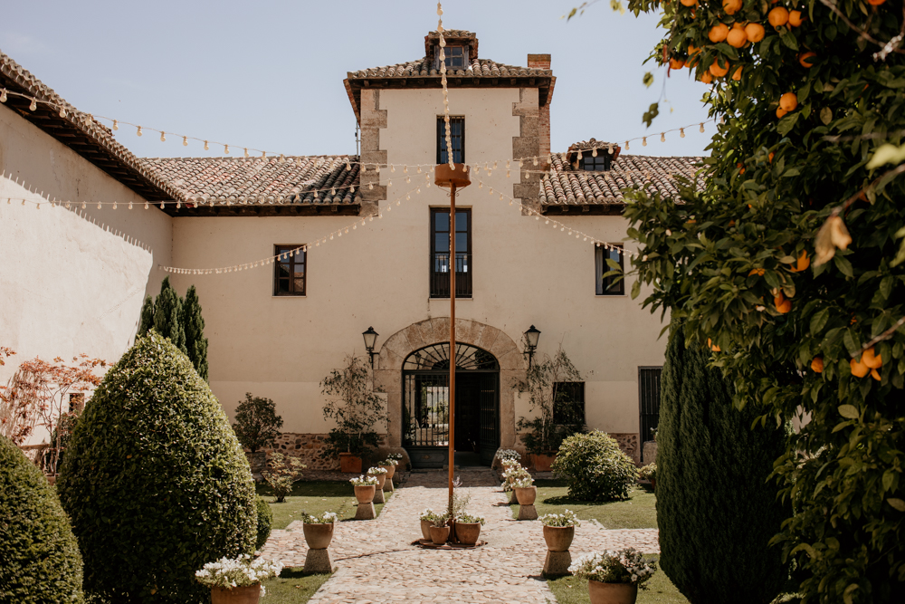
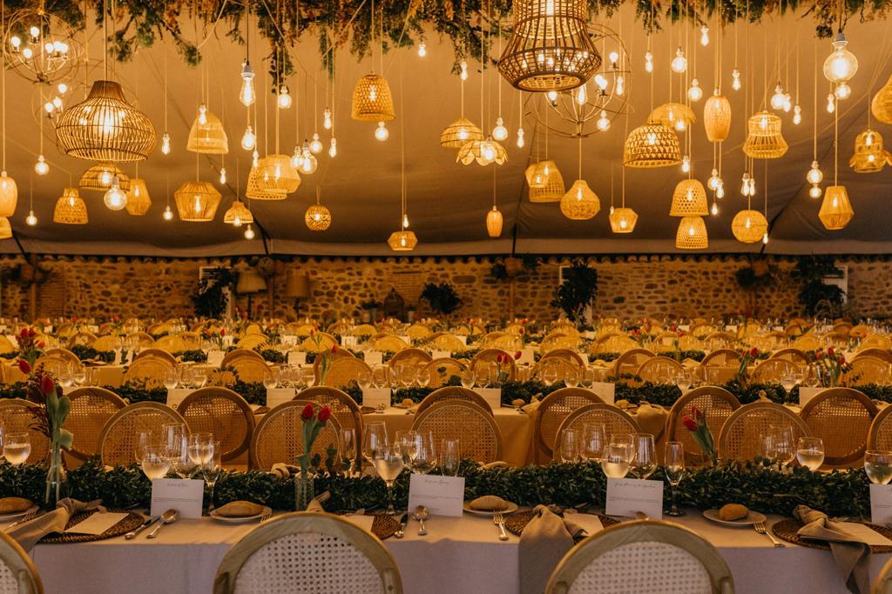

Ceremonia
Lugar: Iglesia St. Maria Magdalena
Municipio: Torrelaguna (Madrid)
Hora: 18.30h
📍 Como llegar a la iglesia
03-07-2027
Queremos que disfrutes sin preocuparte de nada. En esta pagina reunimos la informacion principal del dia y te dejamos el acceso directo al formulario de inscripcion.
Guardala en tu movil para tener todos los detalles a mano.
Lugar: Iglesia St. Maria Magdalena
Municipio: Torrelaguna (Madrid)
Hora: 18.30h
📍 Como llegar a la iglesia
Finca: Finca Casa de Oficios
Municipio: Torremocha del Jarama (Madrid)
Hora: 20.00h
📍 Como llegar a la finca
El formulario de Google Forms guarda respuestas automaticamente en Google Sheets, para que podamos gestionar confirmaciones y preferencias de forma visual.
Abrir formularioSi tienes dudas sobre transporte, menu o logistica, aqui tienes respuestas rapidas.
Si. Habra servicio de ida y vuelta y ajustaremos plazas segun las respuestas del formulario. Cuando cerremos horarios exactos, los publicaremos aqui para que podais organizaros facilmente.
En el formulario de inscripcion tienes un campo especifico para alergias, intolerancias y preferencias. Revisaremos cada caso con el catering para que todo este bien preparado el dia de la boda.
Si. Contaremos con opciones vegetarianas, veganas y menu infantil. Solo tienes que indicarlo en la inscripcion para dejar cada menu confirmado con antelacion.
Te recomendamos confirmar cuanto antes para ayudarnos con la organizacion. La fecha limite oficial de RSVP se comunicara por el mismo canal de invitacion y se reflejara en esta pagina.